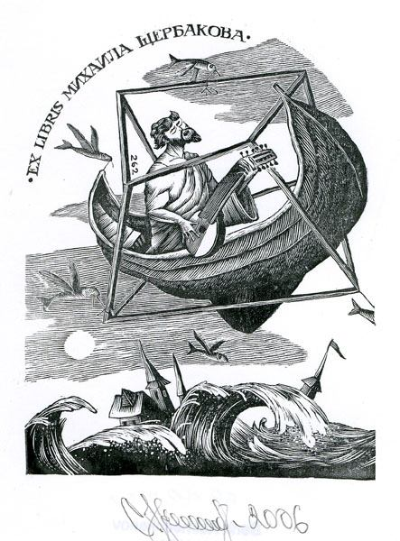

| Экслибрис Михаила Щербакова. Работа Серика Кульмешкенова. |
|---|
|  |
|
От автора. Несколько слов о содержании книжного знака.... Хотя не всегда нужно обьяснять, но тем не менее... Певец, играюший на лютне и плывуший в лодке над бушуюшим миром... Облачённый в парадоксальную клетку, которую несут и движут летаюшие рыбы... Кажушийся плен, а творчество и есть форма плена, но лишь условный, так как в любой момент автор может выйти сквозь любую открытую грань... Не ищите сходства портретного. Как и просил меня Михаил, я не стал делать его портрета... Это, скорее всего, некий греческий певец, играюший на лютне.... |